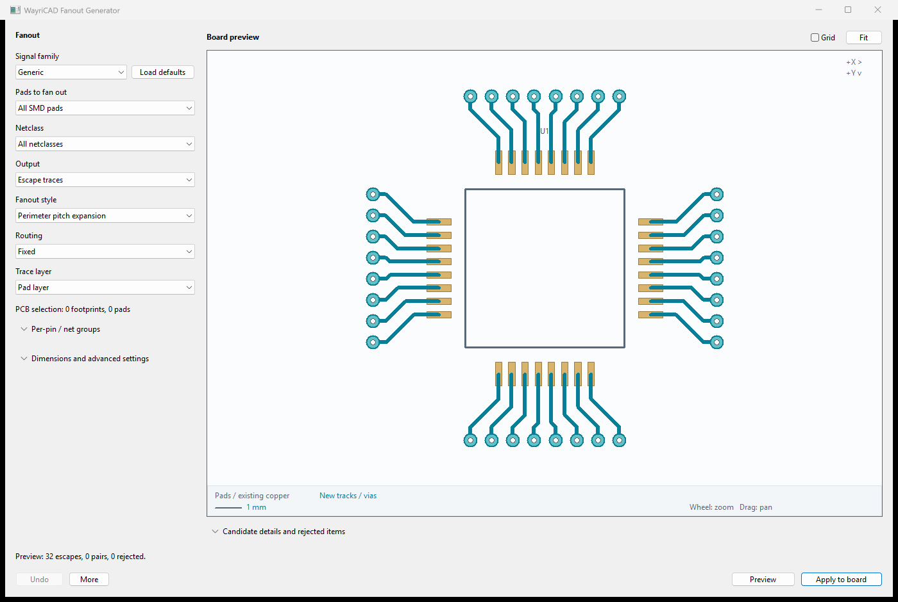
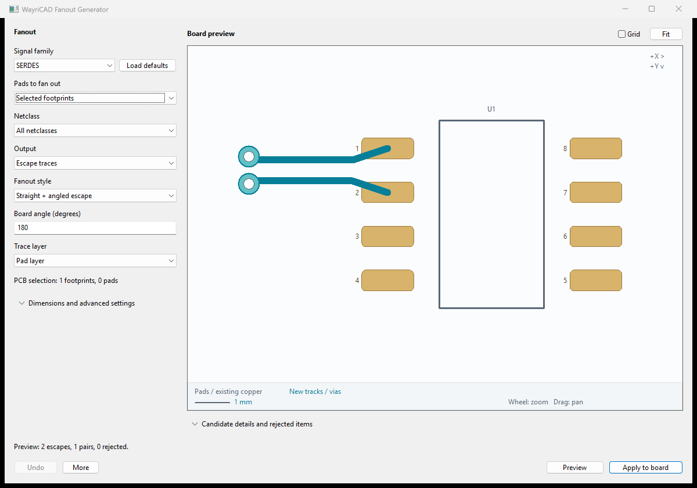
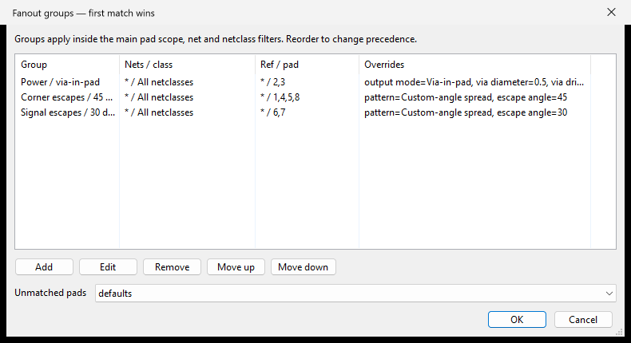
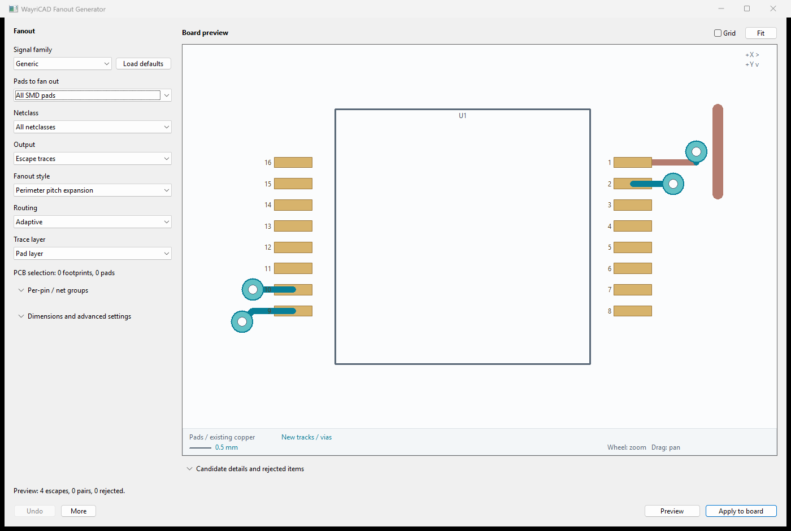

A fully local routing tool for PCB Editor. No hosted UI or remote preview assets are required.
Perimeter pitch expansion launches straight beyond each pad, bends at 45 degrees with outer tracks bending first, and finishes at wider parallel spacing. Set Straight launch and Outer pitch under advanced settings. Zero pitch fits pad and track/via spacing automatically; escape length is a minimum reach and grows to fit the expansion. Select a BGA/grid style for arrays and use separate via-in-pad rules for exposed center pads.

Disposable fixture: 0.5 mm pads to 0.8 mm outer pitch. Independent escapes are not impedance or differential-pair signoff. Run native DRC after applying.
1. Configure geometry and pad scope or target net.
2. Click Preview. The canvas and result table show accepted candidates and rejection reasons. Preview creates no PCB copper.
3. Inspect the result, then Apply to board. A named WayriCAD group contains the committed geometry. Run KiCad DRC before saving or manufacturing.
The optional More → Review placement again command rechecks the board snapshot and prepares the same geometry; it is not required before Apply. More → Clear preview discards unattached candidates. Settings changes invalidate the preview. Board changes require a new preview. Plugin Undo/Redo preserves a recoverable group; reopen the tool to find its existing named groups.
Choose selected SMD pads, selected footprints, reference wildcards, or all SMD pads. Through-hole pads and pads without a net are excluded. Choose Output → Via-in-pad to place vias directly in selected pads, or Escape traces with radial, eight-direction dogbone, diagonal quadrant, perimeter, corner, or BGA/LGA diagonal style. Configure track width, escape length, angle, X/Y offsets, via diameter/drill, and copper clearance. Netclass filters pads using live board classes plus saved project explicit assignments and wildcard patterns. Trace layer lists actual enabled copper layers. Choosing a different layer creates a source via at the pad, then routes on that layer; this keeps the trace connected. Through vias span F.Cu to B.Cu.
The planner checks existing other-net pad/track envelopes, zones and routing keepouts, board edges/cutouts, and collisions between generated copper. Checks are conservative, so valid arrangements can be rejected. This is a fanout seed generator; it does not autoroute an entire BGA or guarantee manufacturing clearance.
Primary choices remain visible; detailed dimensions and rejection tables are collapsed until needed. The clean, neutral canvas shows footprint outlines and references, real native pad polygons/rotation, existing copper, and generated geometry. A visible legend, millimetre scale, and coordinate orientation support review; the grid is optional and off by default. The resizable canvas supports wheel zoom at the cursor, drag to pan, double-click to fit, and via picking for coordinates. Pads, existing tracks/vias, zone outlines, and board edges provide context. Candidate copper and drill sizes use board units. Arc tracks currently appear as conservative bounding envelopes; native pads use their effective polygons; the IPC fallback uses supported padstack shapes. The canvas is a review aid, not a replacement for PCB Editor or DRC.
Use KiCad 10's bundled Python so `pcbnew` is available. List JSON option names and actual project choices with `python -m wayricad_runtime.cli fanout settings --board source.kicad_pcb` (or `stitching settings`). Settings are a JSON object, for example:
{"scope":"Reference wildcard","ref":"U1","pattern":"Dogbone outward","length":1.2,"width":0.2,"via_diameter":0.6,"via_drill":0.3,"clearance":0.2}
python -m wayricad_runtime.cli fanout plan --board source.kicad_pcb --settings settings.json --output plan.json --svg preview.svg python -m wayricad_runtime.cli fanout apply --board source.kicad_pcb --plan plan.json --output routed.kicad_pcb
Plan is read-only and produces reviewable JSON plus an optional standalone local SVG. Apply recomputes and checks the reviewed geometry and board fingerprint, then writes a new `.kicad_pcb` file. It refuses source overwrites, existing destinations, empty plans, and stale or altered candidate geometry. The source remains unchanged.
Native in-memory board tests, file round-trips, and hidden wx frame smoke checks run against KiCad 10. The suite also packages an IPC entry point for forward compatibility; supported geometry depends on the live IPC API. Unsupported capabilities fail explicitly. Live KiCad 11 behavior must be validated against its released runtime.
Synthetic SOIC demonstration board; all resources bundled locally.

Choose 45-degree spread, Custom-angle spread, Straight + angled escape, or Staggered rows. Configure a pattern-relative, board-absolute or footprint-relative heading. The preview displays every actual bend.
Signal families include DDR, GDDR, SERDES, PCI, PCIe, PXI, PXIe and LVDS. Load defaults explicitly applies suggested geometry and net-name filters while preserving electrical dimensions. DDR/GDDR data buses use independent escapes; select clocks or strobes separately for paired routing.
Auto differential pairs requires named mates within the same filtered footprint, uses a parallel section with configurable gap, and rejects both members if clearance or generated-skew checks fail. Candidate details show generated lengths and pair identity. Use selected netclass dimensions to read saved project widths, gap, clearance and vias. Re-preview after changing settings or project rules.
These are breakout geometry presets: full-channel timing, impedance, return paths and protocol compliance still require board-specific constraints and KiCad checks. See the bundled advanced-fanout.md and high-speed-settings.json for details.

Expand Per-pin / net groups and choose Manage groups. Name rules, match net names, netclass, references and pad numbers, then override the style, layer, dimensions or via-in-pad output. Blank overrides inherit the main settings. The first matching rule wins inside the main pad scope and filters.
Set unmatched pads to defaults, skip or error. All groups share one preview and clearance check; the larger clearance wins between groups. Paired routing rejects mates split across rules and rejects both mates on a collision. The preview table and CLI JSON identify each group. Changing rules requires a fresh preview. See advanced fanout guide and JSON example.
Expand Per-pin / net groups. First matching rule wins; blank overrides inherit the main settings. Put specific rules first, then preview and inspect the Group column in candidate details.

Disposable SOIC example: pads 2–3 use via-in-pad, corners use 45-degree escapes, and pads 6–7 use 30-degree escapes. Dimensions are illustrative; run board DRC before saving.
Select Routing → Adaptive to search nearby short routes around existing copper. Perimeter pads keep a straight outward launch; BGA/grid styles can search all directions. A simple straight-track stub continues from its open endpoint. Existing copper is never moved or deleted.
Adjust Adaptive radius and search step under advanced settings (3 mm / 0.25 mm initially). The search checks at most 4,096 candidates and three seconds per pad. This is a bounded local search, not a guarantee of a globally shortest route. Narrow the pad/net scope on dense boards.
Branches, loops, other-pad connections, existing via/arc endpoints and same-net zone topology require manual review. Fixed mode remains available for paired escapes; via-in-pad retains its fixed location. Read rejection reasons and run native DRC after Apply.
